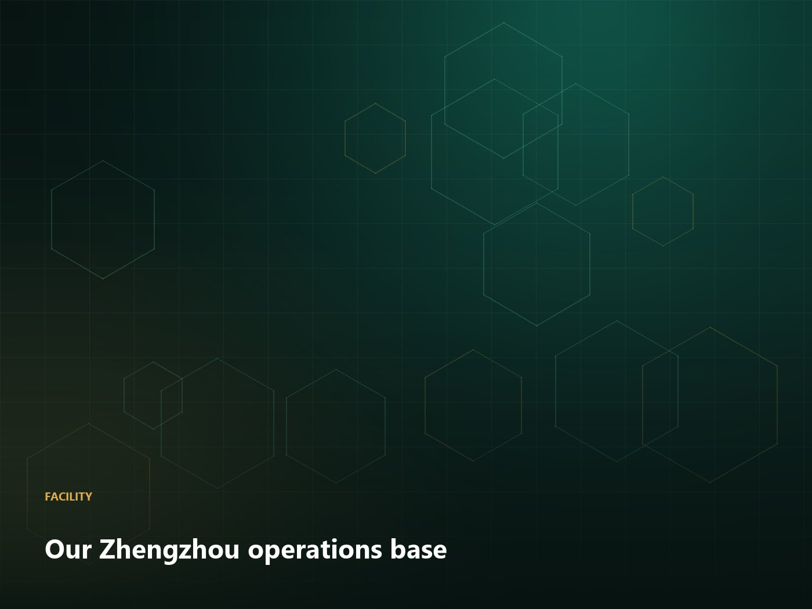
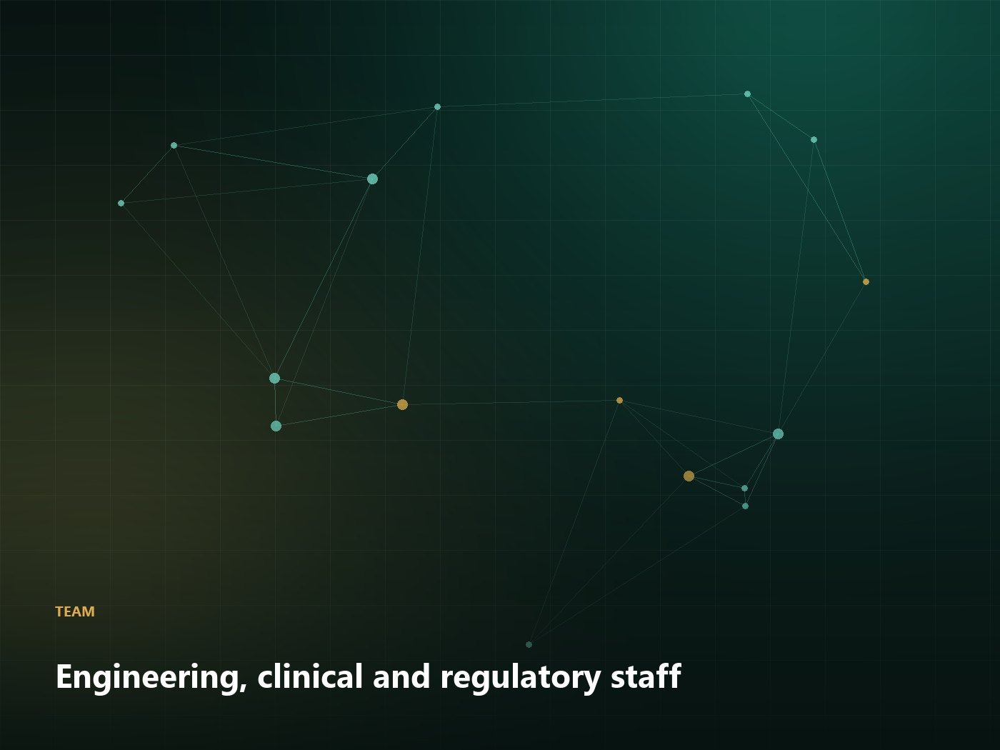

About us
A Chinese technology and clinical company built for Western partnerships
Awakening Culture Technology (Henan) Co., Ltd. works across three areas: technology development and transfer, international scientific collaboration, and Traditional Chinese Medicine clinic services.
Who we are
Awakening Culture Technology (Henan) Co., Ltd. is based in Zhengzhou, Henan, and works with partners in North America and Europe. Our business sits at the junction of three things that are usually handled by three different companies: botanical process engineering, international technology collaboration, and Traditional Chinese Medicine clinical practice.
We exist because that junction is where cross-border projects fail. An equipment supplier will deliver a machine; a consultant will deliver a report; a training provider will deliver a certificate. What partners actually need is one team accountable for the point where engineering decisions become compliance obligations and clinical practice becomes patient outcomes.
How we are organised
- Process engineering — scale-up, equipment specification, qualification and technology transfer documentation.
- Regulatory and quality — dossier support, specification review, batch record systems and audit readiness.
- Clinical services — clinic start-up, dispensary setup, diagnostic technology and structured practitioner training.
- Sourcing — GACP-aligned herb supply with batch-level traceability and destination-specific testing.
How we work with overseas partners
Three principles govern how we take on work. First, we write things down: proposals state the assumptions, the exclusions and the price, and technical opinions are delivered in writing rather than in a call. Second, we say no: if a product has no viable regulatory route, or a process cannot be scaled economically, we tell you before you spend money. Third, we stay: every customer is assigned a named account manager who remains responsible for the relationship, not a shared inbox.
A supplier sells you a shipment. A partner tells you when not to buy it.
Where we are going
Our focus for the coming years is depth rather than breadth: fewer product families, better documentation, and long-term relationships with a smaller number of partners in North America and Europe. That is a deliberate choice. It also means we would rather spend an hour on a scoping call that ends in a no, than ship equipment into a project that has no regulatory route.

Operations
Our base in Zhengzhou
Our operations, final assembly and testing take place in Zhengzhou, Henan, with partner fabrication for specialised components. Assembly, factory acceptance testing and pre-shipment inspection are conducted under our own quality system, and customers are welcome to attend in person or by live video.
- Assembly and factory acceptance testing on site
- Pre-shipment inspection and documentation control
- Third-party inspection supported (SGS, BV, TÜV)
- Customer audits welcomed, in person or remote

People
The team you will actually work with
Our staff combine process engineering, quality assurance, regulatory affairs, sourcing and clinical practice. Partner-facing communication is in English, with bilingual support in Chinese for technical documentation and clinical training.
- Process engineering and QA in-house
- Regulatory affairs with EU and US experience
- Clinically qualified TCM practitioners
- English-speaking account management
Milestones
How we got here
2019
Founded in Zhengzhou
Established as a technology development and cultural exchange company, working initially with domestic manufacturers on process documentation.
2021
First clinic programme abroad
Delivered a complete clinic start-up package including localised SOPs and clinical onboarding for a partner in North America.
2023
Traceable sourcing programme
Formalised GACP-aligned sourcing across 120+ herbs with batch-level testing and destination-specific panels.
2024
Digital health line
Released the TCM diagnostic platform and cross-border consultation software with multilingual practitioner interfaces.
2026
Expanded technology transfer
Formalised fixed-price technology transfer engagements with qualification support across Europe and North America.
Compliance
Certification and documentation
We supply the paper that makes a shipment usable, and we tell you what we do not yet hold.
CE-marked equipment
Machinery directive conformity for supplied equipment, with declarations and technical files.
cGMP design basis
Equipment designed and documented against cGMP expectations, with material and finish certificates.
GACP-aligned sourcing
Good Agricultural and Collection Practice aligned supplier qualification and origin audit reports.
ISO 9001 system
Quality management system applied to assembly, testing and documentation control.
Certificates and scope statements are provided on request before order. Where a specific certification is required and not held, we will say so in the proposal rather than after the deposit.
Want to know more before you talk to us?
Ask for our capability statement and sample documentation pack. No sales call required.